01Lower East Side — direct
02Lower East Side — hair toss
03Stage — arm raised
04Lower East Side — contemplative
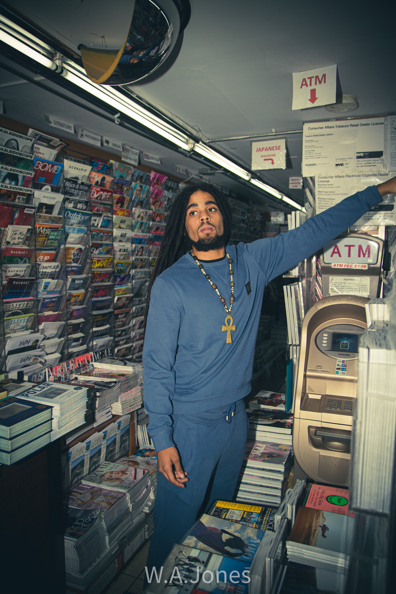
05Newsstand — ATM
06Backstage — corridor
07Brownstone — solo
08Lower East Side — profile
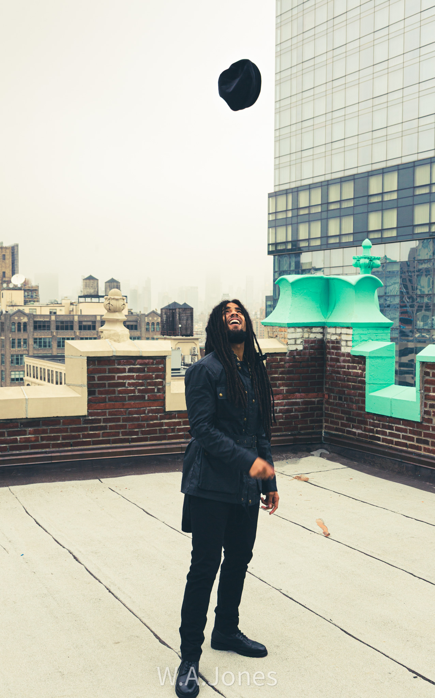
09Rooftop — hat toss
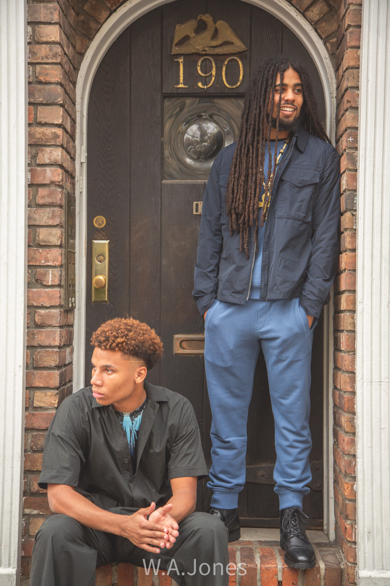
10190 — two subjects
11Newsstand — facing camera
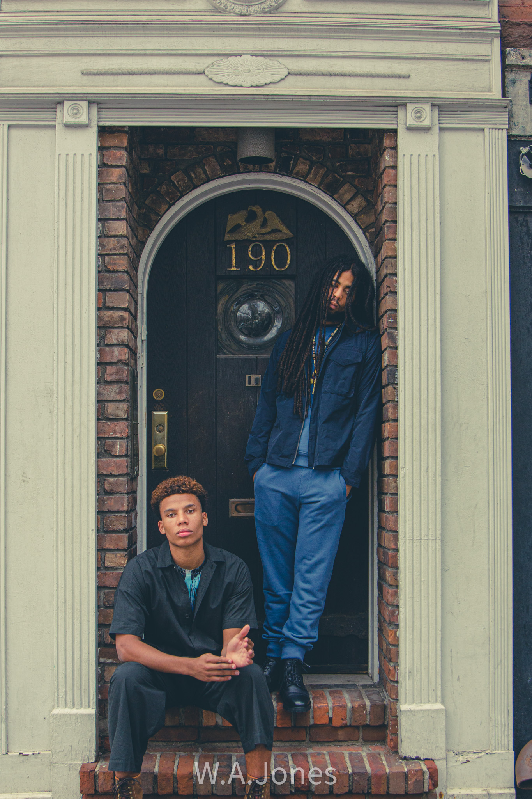
12190 — two subjects
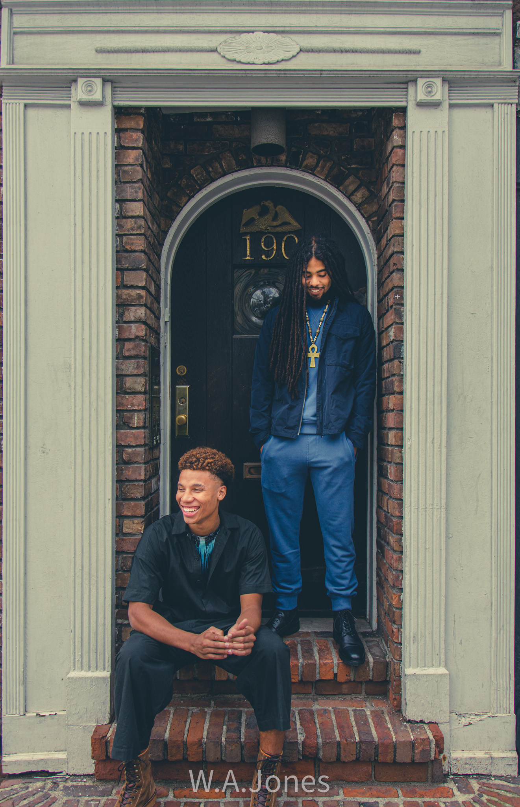
13190 — wide
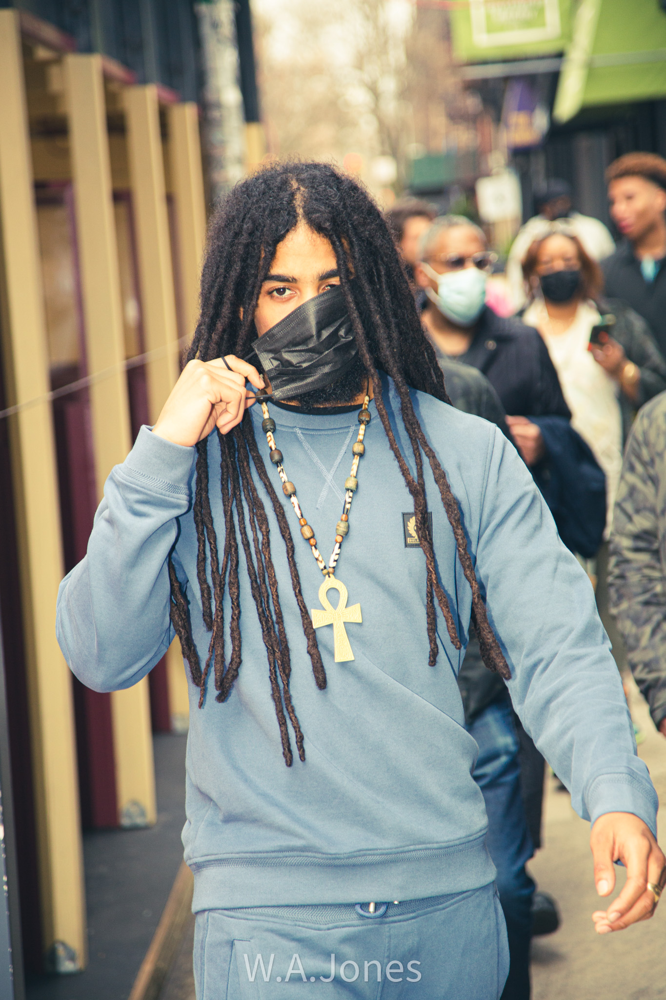
14Street — mask
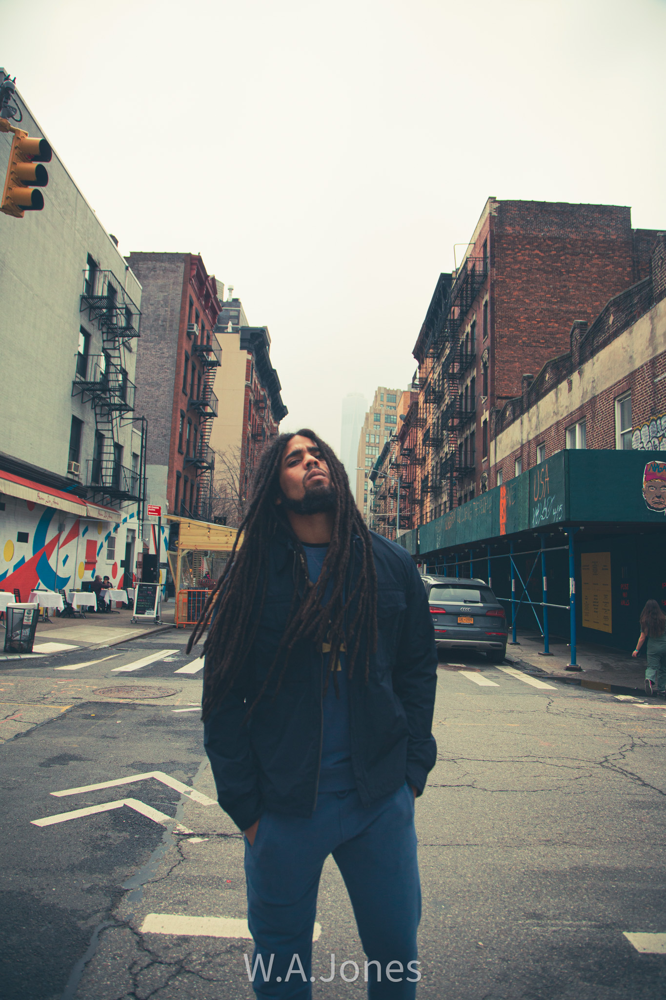
15Street — looking up
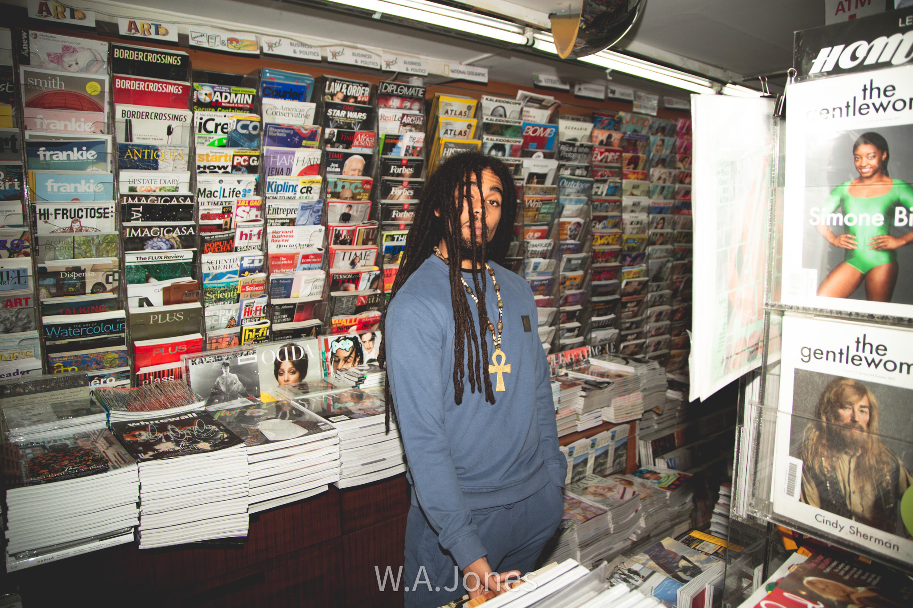
16Newsstand — interior
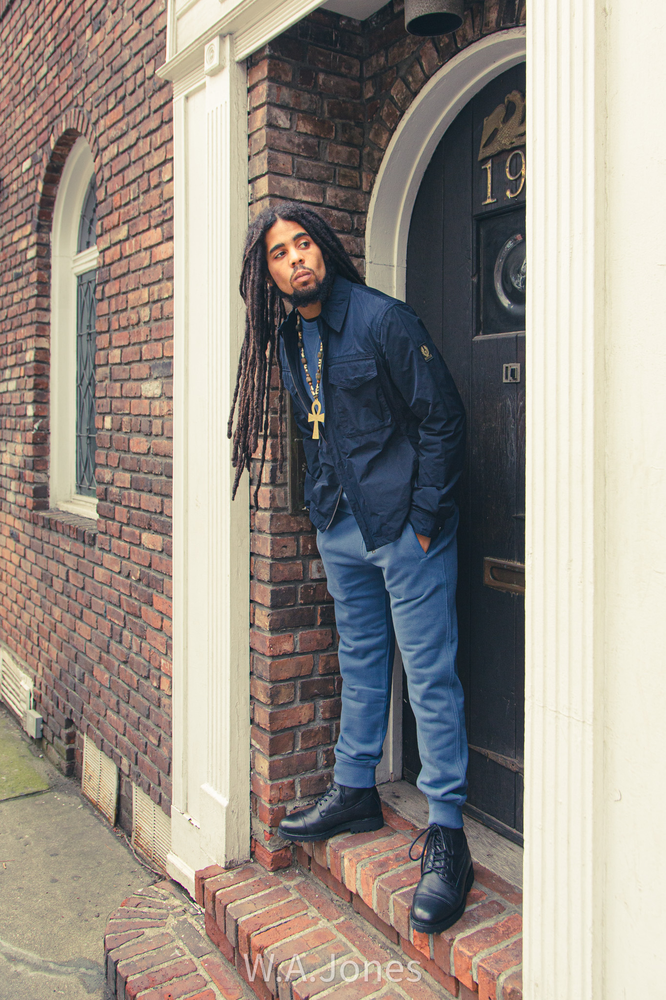
17Brownstone — solo alternate
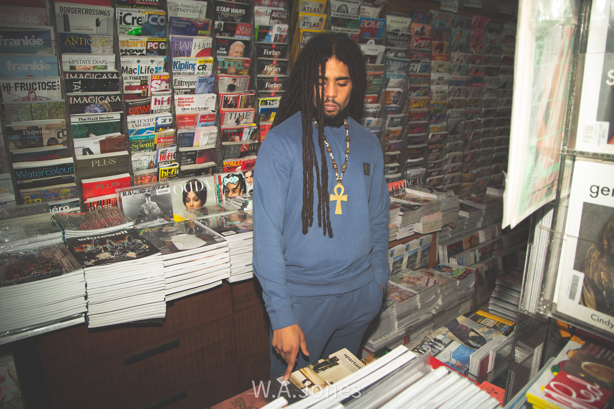
18Newsstand — browsing

19Rooftop — triptych
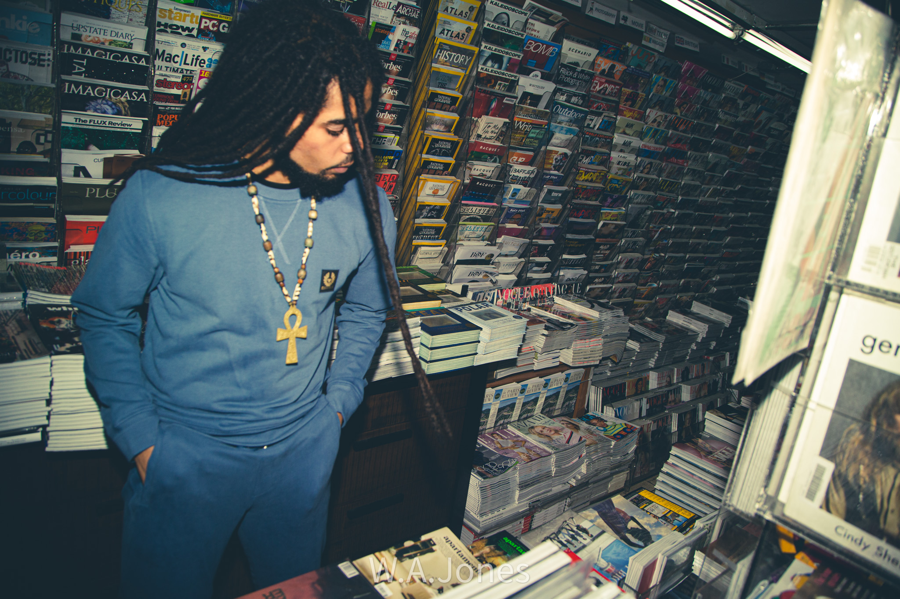
20Newsstand — dark interior
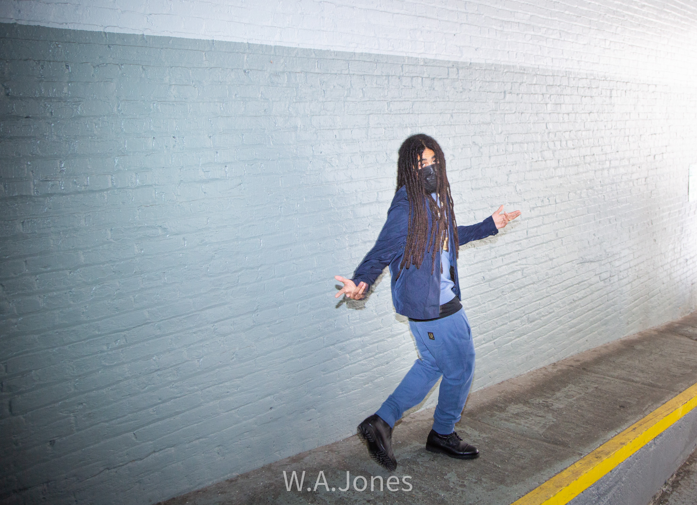
21Tunnel